One app for everything about your computer.
A left rail and card groups, like the Windows 11 layout, written for Zohara in Rust and GTK. Every page changes the real system, and changes show up as the system changes, within a second.

The desktop, your way.
Taskbar and windows
Hide, float or fade the taskbar, move the window buttons, and set the cube and animation options with sliders.
3D desktop cube
Turn desktops as a cube, open the overview, move windows between desktops, or let each new app open on its own desktop.
Live wallpaper
A video that loops behind your windows, quiet unless you turn the sound on.
Sound
Balance for every output, volume up to 150%, an equalizer that changes while the music plays.
Touchpad and mouse
Reverse the scroll direction on each separately, tune speed, acceleration, tap to click and left-handed mode.
Accessibility
Contrast, text size, a screen reader and more.

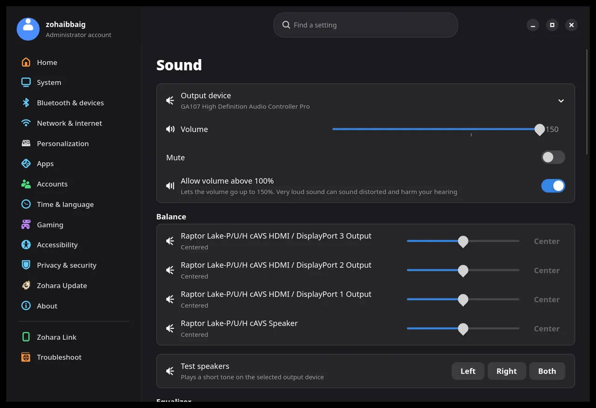

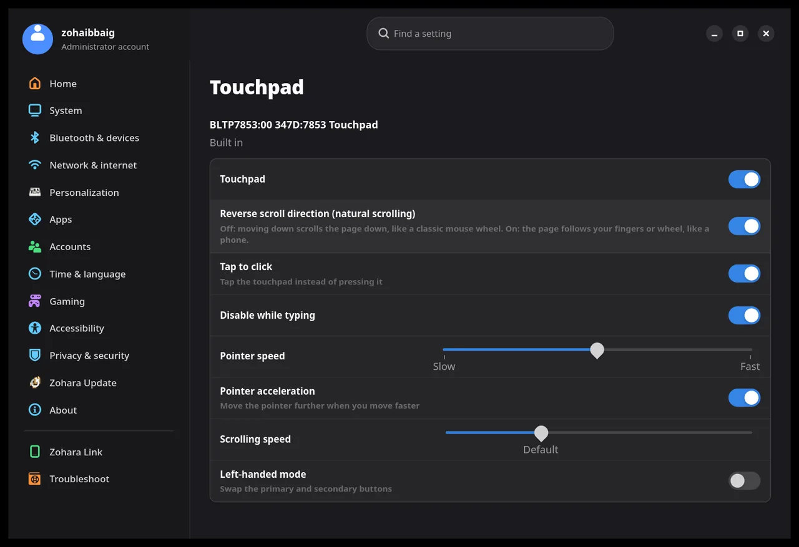

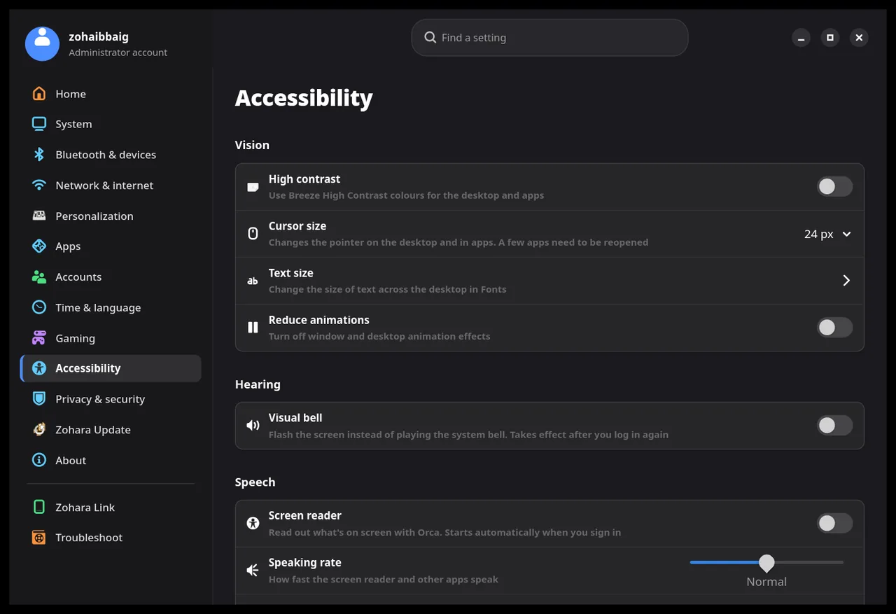
Display, power, memory.
Display
Resolution, scale and night light.
Power and battery
Power mode, sleep and lid rules.
Memory and performance
Plain-language controls for swap behaviour, cache pressure and compressed memory, with the defaults a click away.
Graphics choice per app
On a laptop with two graphics chips, choose which one each app uses.
Keyboard
Shortcuts, key repeat and layouts.
Default apps
Choose what opens each kind of file.

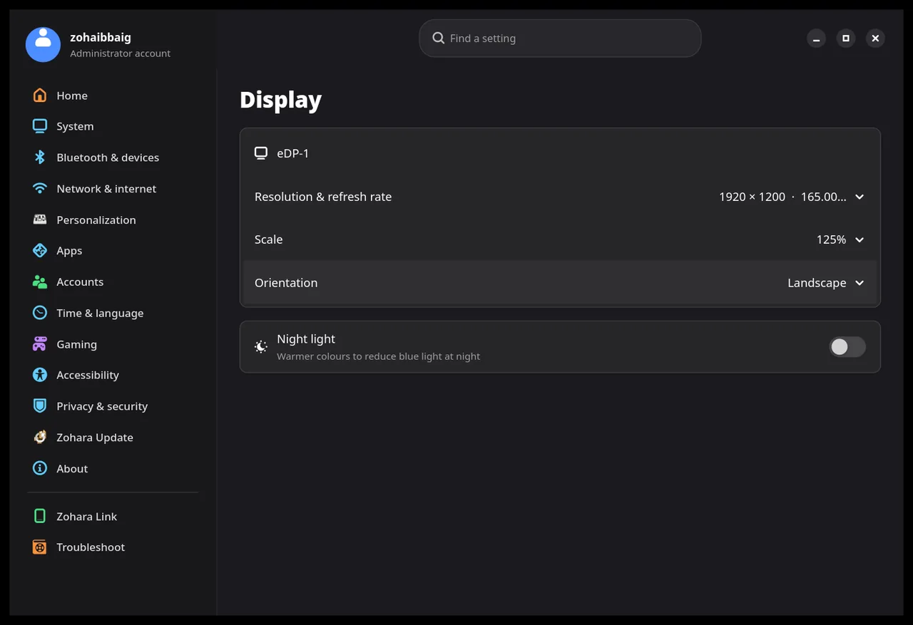

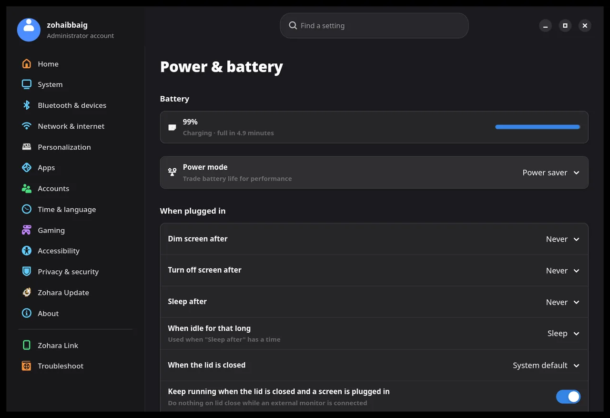

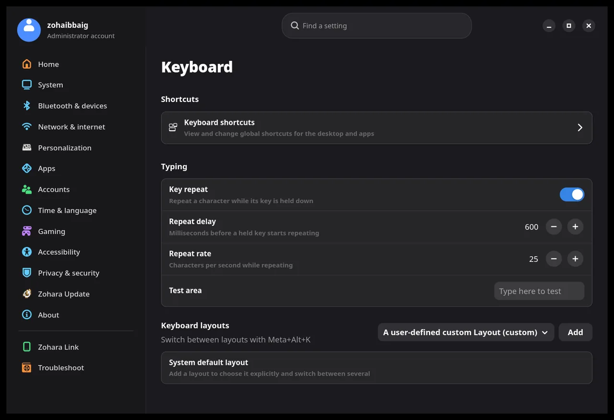
Updates you control.
Pick a channel, choose what to update, and undo the last update. Programs that fit your hardware are suggested, and you can say no to any of them. Update checks tell you; they never install on their own.

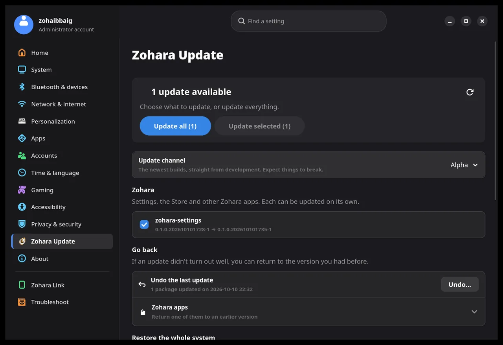

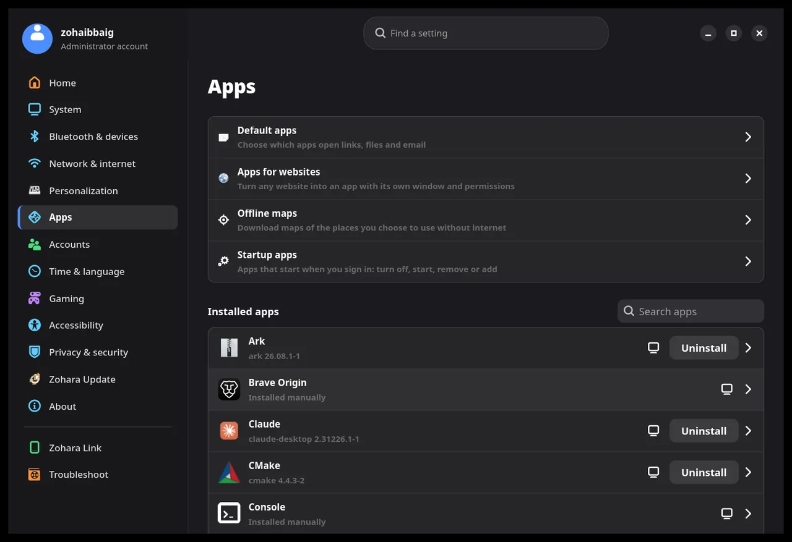

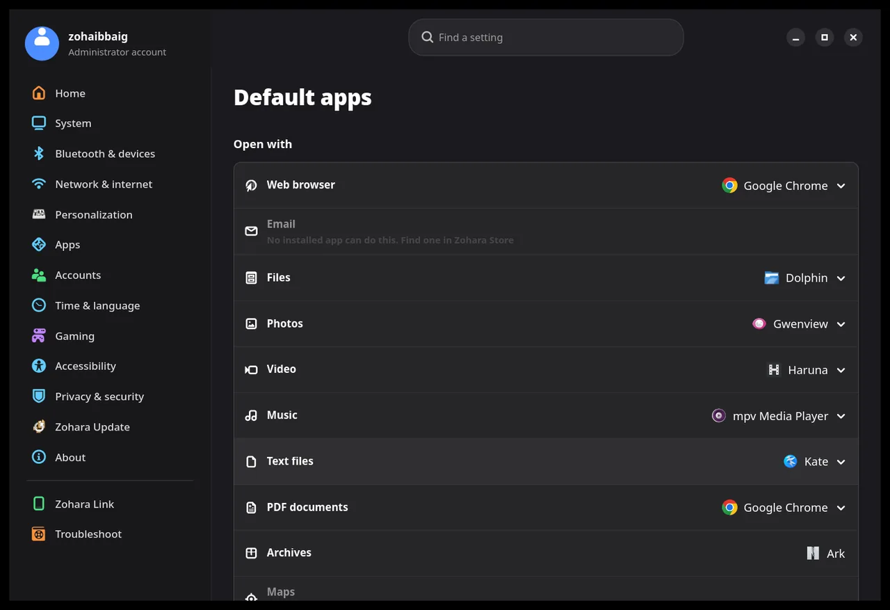
USB drives, SD cards and external disks.
Plug one in and it shows up in Settings.
- Rename and format as exFAT, FAT32, ext4 or Btrfs.
- Check and repair, and close it safely before you unplug it.
- Make a bootable USB. Choose an ISO or disk image and write it from Settings, with a read-back check afterwards. Your administrator password is asked before anything is written.
- Hard to wipe by accident. The disks inside the computer and the one Zohara runs from are locked. Every erase names the drive, lists what is on it and needs you to type ERASE; Settings checks it is still the same drive just before it starts.
Safe, and honest about problems.

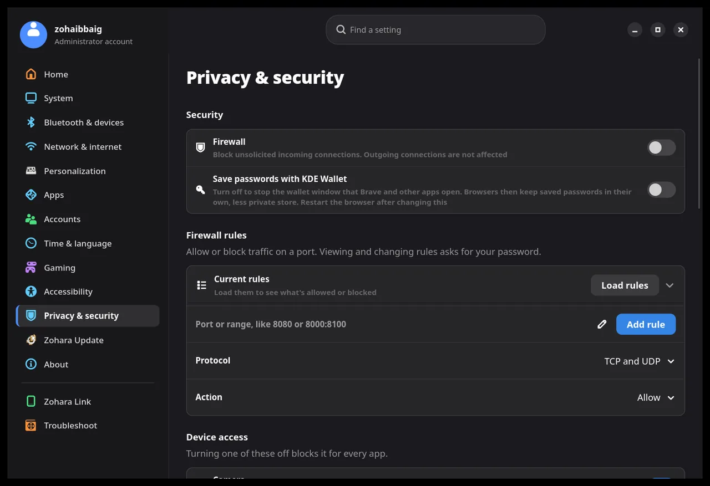

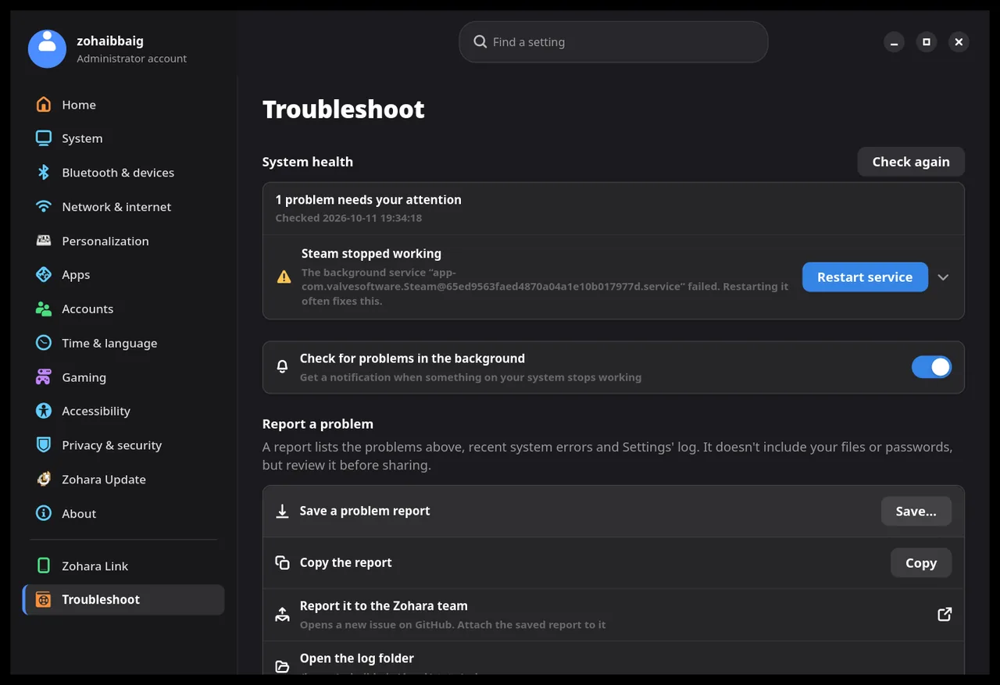

Coming next. In testing
These are built and being tested in the development channel. They are not in the 1.1 ISO.
Windows games
Open Windows programs with a double-click, with Proton-GE or Wine, a Safety mode, and settings for each game.
Games from every launcher
A settings gear for Steam, Lutris and Heroic games: graphics chip, Game Mode, MangoHud, options.
Java for Minecraft
See which Javas are installed, which a Minecraft version needs, and install or switch the system Java.
Zohara Link and game streaming
Pair a phone, use it as a touchpad and game controller, and stream the screen as live video.
Live graphics view
Which graphics chip each app is using right now, with load, memory and temperature, without waking a sleeping chip.
Proton-GE updates
A notice when a newer Proton-GE is out. You press Update; nothing is automatic.